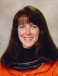

Lyndon B. Johnson Space Center
Houston, Texas 77058
|
National Aeronautics and Space Administration Lyndon B. Johnson Space Center Houston, Texas 77058 |
 |
Biographical Data |
||
Janet Lynn Kavandi (Ph.D.)
DIRECTOR, FLIGHT CREW OPERATIONS, JOHNSON SPACE CENTER
PERSONAL DATA: Born in Springfield, Missouri. Married to John Kavandi. They have two children. She enjoys snow skiing, hiking, camping, horseback riding, windsurfing, flying, scuba diving, piano. Her parents, William and Ruth Sellers of Cassville, Missouri, are deceased.
EDUCATION: Graduated from Carthage Senior High School, Carthage Missouri, in 1977; received a Bachelor of Science Degree in Chemistry from Missouri Southern State College - Joplin in 1980; Master of Science Degree in Chemistry from the University of Missouri - Rolla in 1982; Doctorate in Analytical Chemistry from the University of Washington - Seattle in 1990.
SPECIAL HONORS: Elected to the National Honor Society, 1977. Valedictorian of Carthage Senior High School, 1977. Awarded Presidential Scholarship from Missouri Southern State University, 1977. Graduated Magma Cum Laude from Missouri Southern State University, 1980. Awarded certificates for Team Excellence and Performance Excellence from Boeing Missile Systems, 1991. Recipient of three NASA Space Flight Medals for shuttle flights STS-91, STS-99, and STS-104. Presented the NASA Exceptional Service Medal, 2001 and 2002. Presented the NASA Outstanding Leadership Medal, 2006.
EXPERIENCE: Following graduation in 1982, Dr. Kavandi accepted a position at Eagle-Picher Industries in Joplin, Missouri, as an engineer in new battery development for defense applications. In 1984, she accepted a position as an engineer in the Power Systems Technology Department of the Boeing Aerospace Company in Seattle, Washington. She served as lead engineer of secondary power for the Short Range Attack Missile II, and principal technical staff representative involved in the design and development of thermal batteries for Sea Lance and the Lightweight Exo-Atmospheric Projectile. Other programs she supported include Space Station, Lunar and Mars Base studies, Inertial Upper Stage, Advanced Orbital Transfer Vehicle, Get-Away Specials, Air Launched Cruise Missile, Minuteman, and Peacekeeper. In 1986, while still working for Boeing, she was accepted into graduate school at the University of Washington, where she began working toward her doctorate in analytical chemistry. Her doctoral dissertation involved the development of a pressure-indicating coating that uses oxygen quenching of porphyrin photoluminescence to provide continuous surface pressure maps of aerodynamic test models in wind tunnels. Her work on pressure indicating paints has resulted in two patents.
NASA EXPERIENCE: Dr. Kavandi was selected as an astronaut candidate by NASA in December 1994 and reported to the Johnson Space Center in March 1995. Following an initial year of training, she was assigned to the Payloads and Habitability Branch where she supported payload integration for the International Space Station. Dr. Kavandi served as a mission specialist on STS-91 (June 2-12, 1998), the ninth and final Shuttle-Mir docking mission, concluding the joint U.S./Russian Phase 1 program. Following the mission, she worked as a CAPCOM (spacecraft communicator) in NASA’s Mission Control Center. On her second mission, she served aboard STS-99 (February 11-22, 2000), the Shuttle Radar Topography Mission, which mapped more than 47 million miles of the Earth’s land surface to provide data for a highly accurate three-dimensional topographical map. Dr. Kavandi subsequently worked in the Robotics Branch, where she trained on both the shuttle and space station robotic manipulator systems. On her most recent mission, she served aboard STS-104/ISS Assembly Flight 7A (July 12-24, 2001) on the tenth mission to the International Space Station. The shuttle crew installed the joint airlock “Quest” and conducted joint operations with the Expedition-2 crew. Following her last mission, Dr. Kavandi again served as lead for the Payloads and Habitability Branch, then as the branch chief for the International Space Station (ISS). She was responsible for the training, operations, safety, and habitability of crews onboard the ISS, as well as the hardware and software development and design reviews. She was also responsible for the scientific payloads that the ISS crews operate on orbit and for coordination between international partners for visiting vehicles and associated operations. In 2005, she accepted the post of Deputy Chief of the Astronaut Office. In 2008, she became Deputy Director, Flight Crew Operations, Johnson Space Center. Dr. Kavandi currently serves as Director, Flight Crew Operations, responsible for directing the day-to-day activities of the directorate, including the Astronaut Corps and aircraft operations at Ellington Field.
A three-flight veteran, Dr. Kavandi has logged more than 33 days in space, traveling more than 13.1 million miles in 535 Earth orbits.
JUNE 2014